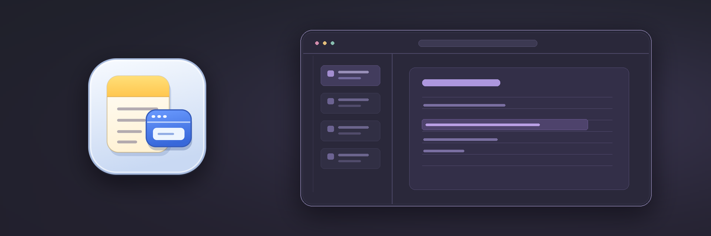

Organize as notas por projeto
Crie pastas e subpastas, fixe notas recorrentes e ordene a lista por título, criação ou edição.

Editor de notas em Markdown
Escreva em blocos, organize em pastas.
Escreva notas com títulos, listas, checklists, código e tabelas. Separe projetos em pastas, fixe notas importantes e use a busca para encontrar o que precisa.
Anote uma ideia, comece uma especificação a partir de um modelo ou importe uma pasta com seus arquivos Markdown. O editor guarda as mudanças no navegador e permite levar o conteúdo com você por exportação ou backup.
Crie pastas e subpastas, fixe notas recorrentes e ordene a lista por título, criação ou edição.
Use modelos de arquitetura, contexto de projeto, especificações e prompts para criar notas que você pode adaptar.
Use o menu / para inserir blocos e arraste as alças para mudar a ordem. Nas tabelas, você pode inserir, mover e remover linhas e colunas.
Ative o modo imersivo para ocupar a janela com o editor. Altere o tema e escolha entre papel liso, pautado, quadriculado ou pontilhado.
Abra o editor no navegador para começar a escrever. As notas ficam armazenadas no navegador, sem precisar criar conta.
Clique em Abrir editor no navegador. No computador, use Mostrar painéis para ver suas pastas e notas.
Comece em branco, selecione um modelo ou importe um arquivo Markdown. Digite / para ver os blocos disponíveis.
Exporte uma nota no formato desejado ou gere um backup JSON para guardar o projeto inteiro.
As notas ficam no navegador e perfil usados para criar o conteúdo. Use um backup JSON para transferir o projeto ou exporte uma nota para levá-la como arquivo.
Sim. Use a opção de importação na barra lateral para abrir um arquivo Markdown ou uma pasta com notas.
Clique com o botão direito na pasta e escolha Exportar pasta para baixar um ZIP com as notas em Markdown e suas subpastas.
Você pode abrir uma cópia local do arquivo HTML. Imagens ou vídeos vinculados a serviços externos dependem de conexão.